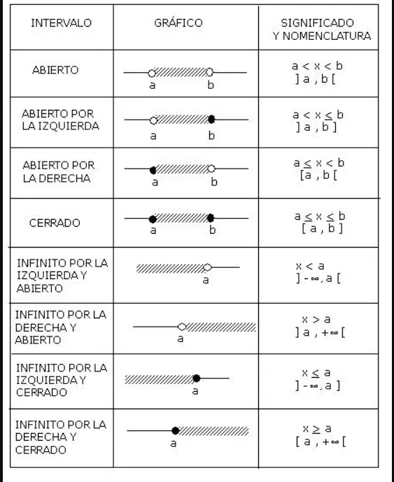

Inecuaciones
Descubriendo las inecuaciones
Descubriendo las Inecuaciones: Resolviendo y Representando
Nombre del docente: Maykelin Francis Quirós
Área curricular: Matemáticas
Nivel: Secundaria
Grado: 3.º de secundaria
Tema: Inecuaciones lineales con una variable
üéØ Objetivos de aprendizaje
Identificar y resolver inecuaciones lineales con una incógnita utilizando los procedimientos adecuados.
Representar gráficamente el conjunto solución de una inecuación en la recta numérica.
ü߆ Introducci√≥n general
Este recurso digital está diseñado para ayudarte a comprender el concepto de las inecuaciones lineales. A través de explicaciones, ejemplos, actividades interactivas y ejercicios, podrás desarrollar tus habilidades para resolver este tipo de expresiones algebraicas y aplicar lo aprendido en situaciones reales.
Introducción
¡Bienvenidos!
En esta lección aprenderás qué es una inecuación, cómo se resuelve paso a paso y cómo se representa en la recta numérica.
Las inecuaciones nos ayudan a entender situaciones donde las cantidades no son exactamente iguales, por ejemplo: "tengo m√°s de $100 pesos" o "el número es menor que 5".
Conceptos clave
INECUACIONES
¿Qué es una inecuación?
Una inecuación es una desigualdad matemática que contiene una incógnita. Ejemplos:
x + 3 < 10
2x ≥ 8
Símbolos más comunes:
- > mayor que
- < menor que
- ≥ mayor o igual que
- ≤ menor o igual que
Propiedad importante:
Si multiplicas o divides ambos lados por un número negativo, debes cambiar el signo de la desigualdad.

Ejemplo paso a paso
EJEMPLO PASO A PASO
Ejemplo:
Resuelve la inecuación: 2x - 3 < 7
Suma 3 a ambos lados:
2x < 10
Divide entre 2 a ambos lados:
x < 5
Solución: Todos los números menores que 5.

Actividades interactivas
Actividad 1
Solución
Solución
Pregunta Verdadero-Falso
Retroalimentación
Falso
Retroalimentación
Verdadero
Retroalimentación
Falso
Reflexión final y autoevaluación
Reflexión
¿Qué fue lo más fácil y lo más difícil de esta lección?
¿Dónde en la vida real podrías usar las inecuaciones?
Obra publicada con Licencia Creative Commons Reconocimiento Compartir igual 4.0